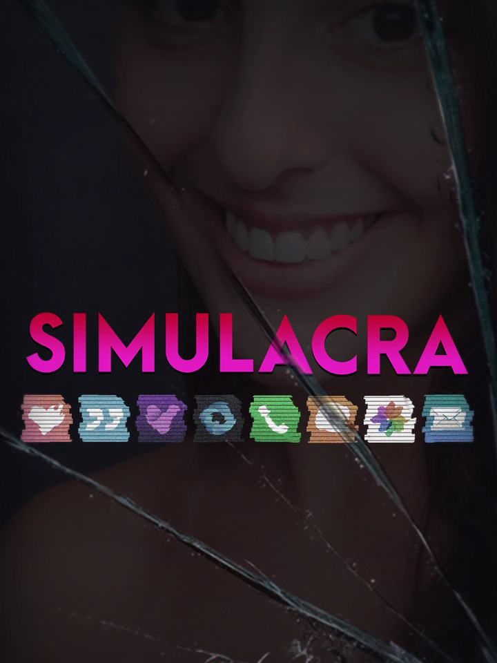

SIMULACRA
SIMULACRA
Details
|  | |
| Playtime | Not Played |
| Last Activity | Never |
| Added | 2025-12-19 0:09:53 |
| Modified | 2025-12-19 11:05:13 |
| Completion Status | Not Played |
| Library | Steam |
| Source | Steam |
| Platform | PC (Windows) |
| Release Date | 2017-10-26 |
| Community Score | 71 |
| Critic Score | 70 |
| User Score | |
| Genre | Adventure Indie Role-playing (RPG) Simulator Visual Novel |
| Developer | Kaigan Games |
| Publisher | Kaigan Games Wales Interactive |
| Feature | Single Player |
| Links | Steam Official Website App Store (iPhone) GOG App Store (iPad) Twitch YouTube Discord Nintendo Playstation |
| Tag | Adventure Atmospheric Choices Matter Dark Detective Drama FMV Horror Immersive Sim Multiple Endings Mystery Point & Click Psychological Psychological Horror Puzzle Sci-fi Simulation Story Rich Thriller Visual Novel |
Description
From the creators of Sara is Missing, SIMULACRA is a spiritual sequel to the highly acclaimed "found phone" horror game.

You found the lost phone of a woman named Anna. In it, you see a desperate cry for help in the form of a video message. The phone behaves strangely as you dive deeper into it. You talk to her friends and they have no idea where she is. Her texts, emails and photo gallery provides fragments of information. It's up to you to piece it together.
Recover lost files, piece back corrupted data, and retrace her final steps. Find her before it's too late.

SIMULACRA is an immersive narrative thriller using the interface of a mobile phone. Like all phones, you have messages, emails, gallery and all kinds of apps to look through. With a strong focus on realism, the game's characters are played by live actors and shot at real locations. Dive into Anna's life as you look at her private photos, go through her dating app or view her personal video logs.

You found the lost phone of a woman named Anna. In it, you see a desperate cry for help in the form of a video message. The phone behaves strangely as you dive deeper into it. You talk to her friends and they have no idea where she is. Her texts, emails and photo gallery provides fragments of information. It's up to you to piece it together.
Recover lost files, piece back corrupted data, and retrace her final steps. Find her before it's too late.
SIMULACRA is an immersive narrative thriller using the interface of a mobile phone. Like all phones, you have messages, emails, gallery and all kinds of apps to look through. With a strong focus on realism, the game's characters are played by live actors and shot at real locations. Dive into Anna's life as you look at her private photos, go through her dating app or view her personal video logs.
Features
- Explore a fully realised world through the lens of a mobile phone.
- Enjoy a unique gameplay experience through popular phone apps, including a dating app, a social media app and a web browser.
- An expansive narrative with hours of gameplay that leads to 5 possible endings.
- Filmed with live actors and an extensive VO cast.
- Solve the recurring image and text decryption puzzles to learn more about Anna’s story.